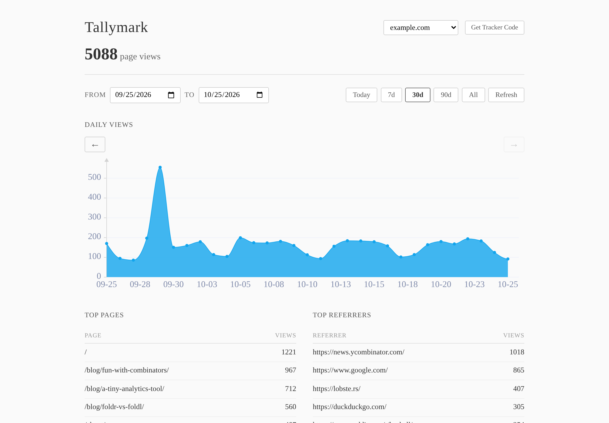
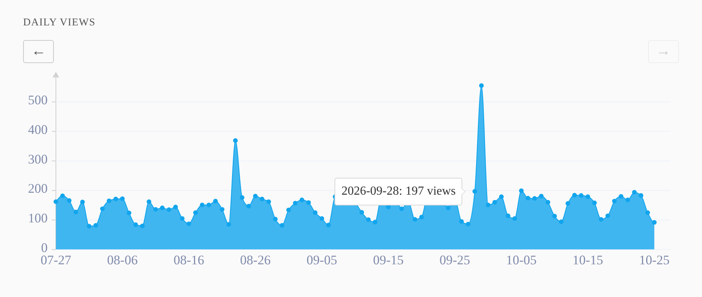
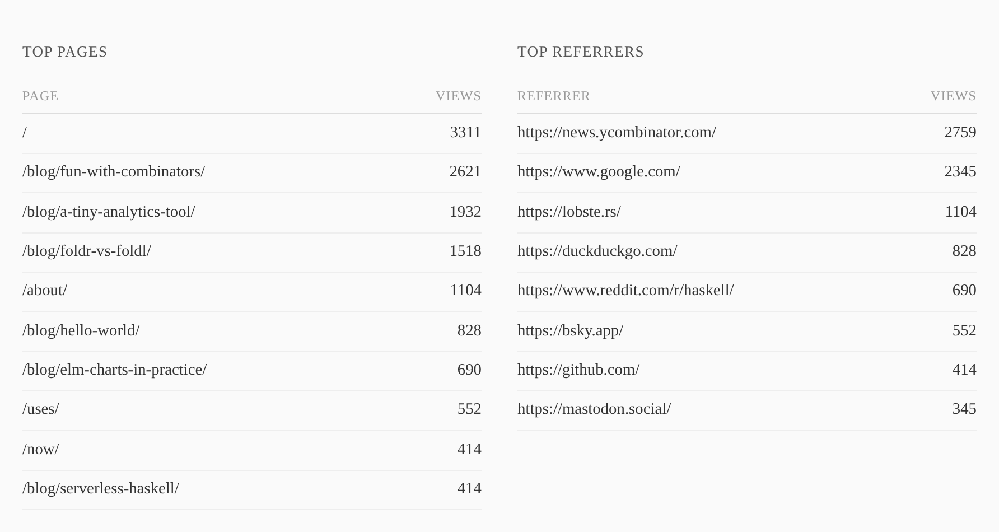
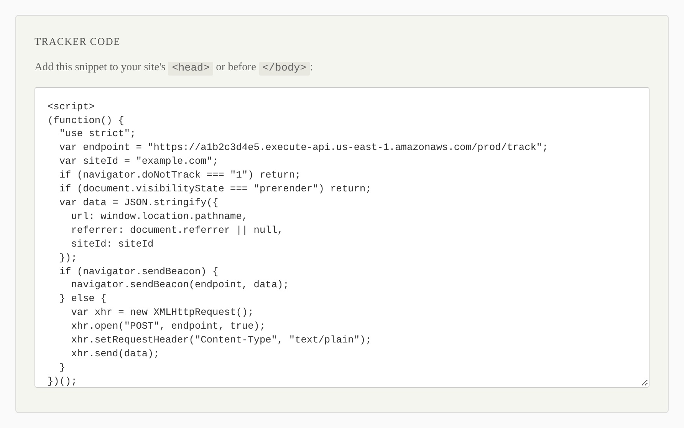
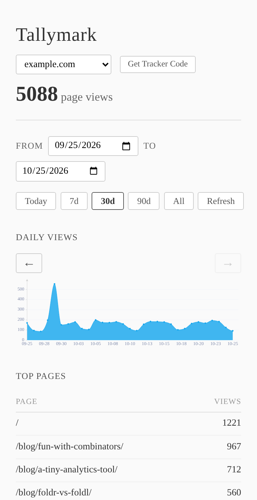

Small, self-hosted web analytics.
Tallymark is an open-source analytics tool you run in your own AWS account. It counts page views and records referrers. It doesn't use cookies or try to identify visitors.
It's small enough that you could build something like it yourself in an afternoon, or have an AI build it for you. If you'd rather skip that and get on with something more interesting, here's one that already works.

What it does
Page views per day, top pages and top referrers, for one or more sites. That's about it.
No cookies or identifiers
The tracker sends the page path and the referrer. Nothing is stored in the browser, and it respects Do Not Track.
A small tracker
About 20 lines of plain JavaScript using navigator.sendBeacon, with no dependencies.
A simple dashboard
A daily views chart, top pages and referrers, and a few date range presets.
Many sites, one deploy
Track all your sites from a single deployment and switch between them in the dashboard.
Cheap to run
It's serverless (Lambda, API Gateway and on-demand DynamoDB), so you pay per request. For a personal site that's typically well under a dollar a month.
Runs in your account
Everything is deployed to your own AWS account, so the data stays with you.
Screenshots
The dashboard is written in Elm with elm-charts. You sign in with the API key you chose when deploying.




How it works
When a page loads, the tracker sends one small POST. A Haskell Lambda function stores it in DynamoDB. The dashboard asks the same function for totals.
Your site ──POST /track──▶ API Gateway ──▶ Lambda (Haskell) ──▶ DynamoDB
▲
Dashboard ──GET /stats, /sites (Bearer key)───────┘
(Elm, on S3)
- BackendHaskell on AWS Lambda, using hal and amazonka
- DashboardElm with elm-charts
- StorageDynamoDB, single table, pay per request
- InfraOne AWS SAM template and a deploy script
Getting started
You need an AWS account, the AWS CLI and the AWS SAM CLI. With a release download there's nothing to build:
# 1. Download and unpack the latest release curl -LO https://github.com/philcrissman/tallymark/releases/latest/download/tallymark.tar.gz tar xzf tallymark.tar.gz && cd tallymark-* # 2. Configure: pick an API key and list your sites cp tallymark.env.example tallymark.env $EDITOR tallymark.env # 3. Deploy ./scripts/deploy.sh
The script prints your dashboard URL. Sign in with your key, click Get Tracker Code, and paste the snippet into your site.